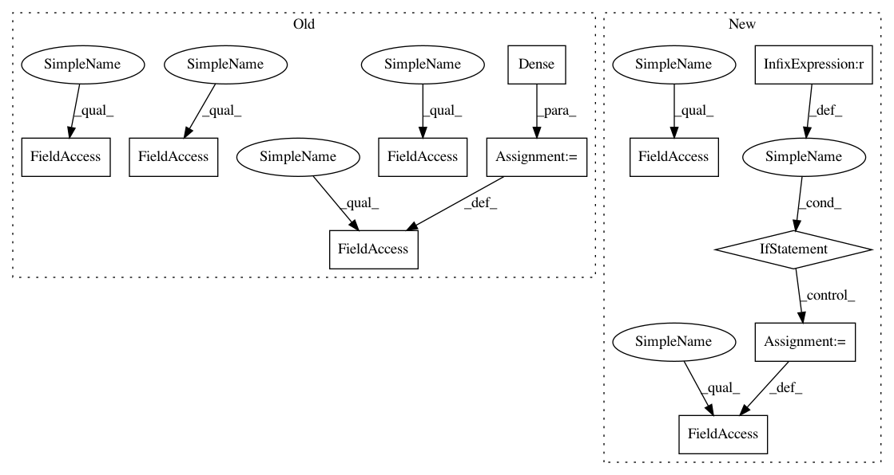

e9aea97df1dc7878827ac193ba75cbea0b3ee351,ludwig/models/modules/sequence_decoders.py,SequenceGeneratorDecoder,__init__,#SequenceGeneratorDecoder#Any#Any#Any#Any#Any#Any#Any#Any#Any#Any#Any#Any#Any#Any#Any#Any#Any#Any#,32
Before Change
else:
self.vocab_size = self.num_classes
self.embeddings_dec = Embedding(num_classes, embedding_size)
self.decoder_cell = LSTMCell(state_size)
if attention_mechanism:
if attention_mechanism == "bahdanau":
pass
elif attention_mechanism == "luong":
self.attention_mechanism = tfa.seq2seq.LuongAttention(
state_size,
None, // todo tf2: confirm on need
memory_sequence_length=max_sequence_length // todo tf2: confirm inputs or output seq length
)
else:
raise ValueError(
"Attention specificaiton "{}" is invalid. Valid values are "
""bahdanau" or "luong".".format(self.attention_mechanism))
self.decoder_cell = tfa.seq2seq.AttentionWrapper(
self.decoder_cell,
self.attention_mechanism
)
self.sampler = tfa.seq2seq.sampler.TrainingSampler()
self.projection_layer = Dense(
units=num_classes,
use_bias=use_bias,
kernel_initializer=weights_initializer,
bias_initializer=bias_initializer,
kernel_regularizer=weights_regularizer,
bias_regularizer=bias_regularizer,
activity_regularizer=activity_regularizer
)
self.decoder = \
tfa.seq2seq.basic_decoder.BasicDecoder(self.decoder_cell,
self.sampler,
After Change
self.decoder_embedding = tf.keras.layers.Embedding(
input_dim=output_vocab_size,
output_dim=embedding_dims)
self.dense_layer = tf.keras.layers.Dense(output_vocab_size)
self.decoder_rnncell = tf.keras.layers.LSTMCell(rnn_units)
// Sampler
self.sampler = tfa.seq2seq.sampler.TrainingSampler()
self.attention_mechanism = None
self.rnn_units = rnn_units
print("setting up attention for", attention_mechanism)
if attention_mechanism is not None:
self.attention_mechanism = self.build_attention_mechanism(
attention_mechanism,
dense_units
)
self.decoder_rnncell = self.build_rnn_cell()
self.decoder = tfa.seq2seq.BasicDecoder(self.decoder_rnncell,
sampler=self.sampler,
output_layer=self.dense_layer)
In pattern: SUPERPATTERN
Frequency: 3
Non-data size: 11
Instances
Project Name: uber/ludwig
Commit Name: e9aea97df1dc7878827ac193ba75cbea0b3ee351
Time: 2020-05-05
Author: jimthompson5802@gmail.com
File Name: ludwig/models/modules/sequence_decoders.py
Class Name: SequenceGeneratorDecoder
Method Name: __init__
Project Name: uber/ludwig
Commit Name: e9aea97df1dc7878827ac193ba75cbea0b3ee351
Time: 2020-05-05
Author: jimthompson5802@gmail.com
File Name: ludwig/models/modules/sequence_decoders.py
Class Name: SequenceGeneratorDecoder
Method Name: __init__
Project Name: asyml/texar
Commit Name: caca2348bd54ec25d71ee05fd2a58e12db39f2e4
Time: 2018-03-24
Author: zhitinghu@gmail.com
File Name: texar/modules/decoders/rnn_decoder_base.py
Class Name: RNNDecoderBase
Method Name: __init__
Project Name: dmlc/gluon-nlp
Commit Name: 3c874575bf40e8b1fa2280371131a8f29ebb3e98
Time: 2020-07-28
Author: xshiab@connect.ust.hk
File Name: src/gluonnlp/models/albert.py
Class Name: AlbertModel
Method Name: __init__